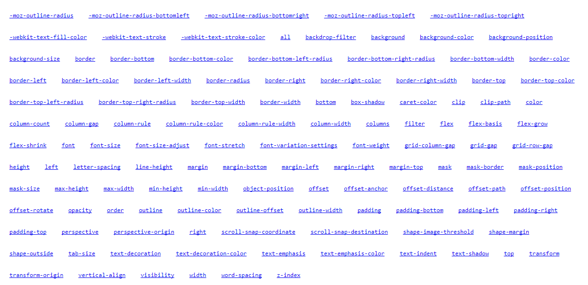

La magia de ANIMATION

Animation es la propiedad que permite animar otras propiedades de css como:
Las subpropiedades de ANIMATION son:
Animation-delay:
Tiempo en espera entre el momento en que el elemento se carga y el comienzo de la secuencia de la animación. Esto permite que la secuencia de animación no comience inmediatamente.
Animation-direction:
Cambia el sentido en el que usualmente se ve la animación
Animation-duration:
Indica el tiempo que va a durar la animación.Es imprescindible y obligatorio declarar esta propiedad, ya que toda animación tiene siempre una duración en el tiempo
Animation-iteration-count:
El número de veces que se repite. Podemos indicar "infinite" para repetir la animación indefinidamente.
Animation-name:
Especifica el nombre de la regla @keyframes que describe los fotogramas de la animación. También es imprescindible y obligatorio declarar esta propiedad.
Animation-play-state:
Permite pausar y reanudar la secuencia de la animación
Animation-timing-function:
Indica el ritmo de la animación, establece las curvas de aceleración. Controla los cambios en la velocidad mientras se produce la animación
Animation-fill-mode:
Especifica qué valores tendrán las propiedades después de finalizar la animación (los de antes de ejecutarla, los del último fotograma de la animación o ambos) es decir si la animación se queda con la ultima acción o la primera
Las propiedades de CSS que se pueden animar son:
TRANSFORM
La propiedad TRANSFORM es un efecto que permite a un elemento cambiar de forma, tamaño o posición.
Es decir que pueden ser trasladados, rotados, escalados y torcer lateralmente.
Todas las transformaciones se consiguen por medio de la propiedad transform, la cual tiene como valor diversos métodos.
Distintos métodos/funciones de la propiedad transform
Ejemplo de scale:
La función scale se utiliza para cambiar el tamaño del elemento. Puede aumentarlo o reducirlo.
Ejemplo de rotate:
La función rotate se utiliza para rotar o girar el elemento